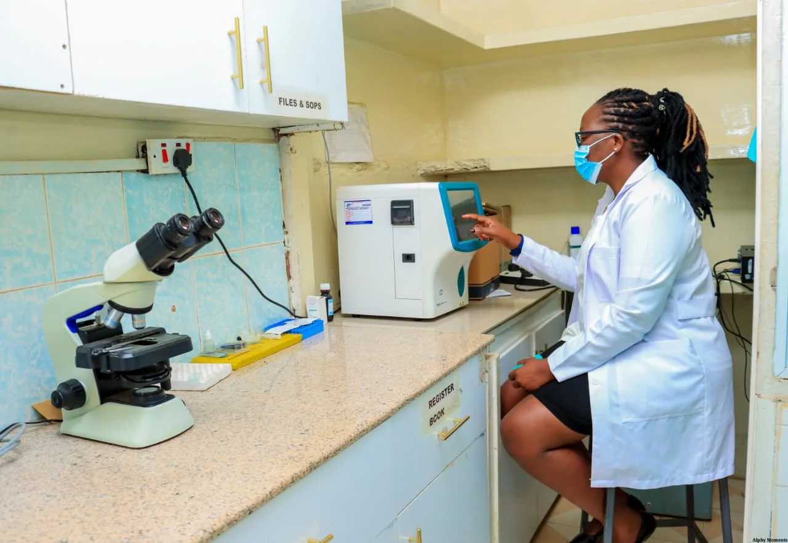

Outpatient services
Consultations and treatment for a range of everyday and ongoing health needs.
- General consultations
- Specialist and wellness clinics
- Treatment of common illnesses
- Hypertension and diabetes management
Care at Gifted Minds
Gifted Minds Medical Centre provides primary and intermediate healthcare services, with inpatient and outpatient care available 24 hours.
Ask about a service Patient-centred care · Kisumu
Patient-centred care · Kisumu
Current services
Service information below is based on the facility profile. Contact the centre to confirm details for your care needs.
Consultations and treatment for a range of everyday and ongoing health needs.
Admission and nursing support for patients requiring an inpatient stay.
Minor theatre care and wound procedures listed in the facility profile.
Testing through the centre’s registered Class C laboratory.
Medication dispensing and patient support.
Additional support for people and families with ongoing care needs.
Maternal and Child Health clinic · Antenatal care, immunisation and postnatal follow-ups.
Contact the centre about care ↗
A connected care pathway
Call or message the centre to ask about current services, availability and the next steps for your visit.
Contact Gifted Minds